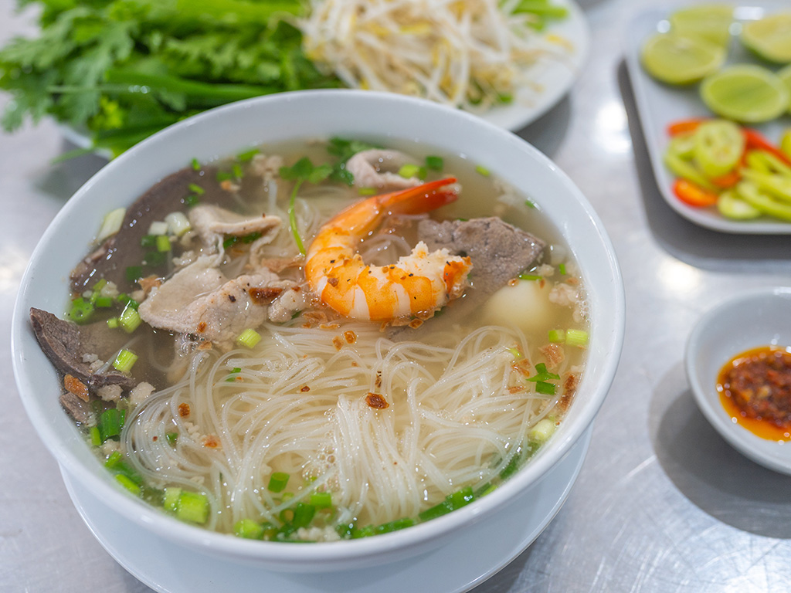

Hủ Tiếu – Món ăn truyền thống hấp dẫn của Việt Nam
Hủ Tiếu là một món ăn truyền thống phổ biến ở miền Nam Việt Nam, với hương vị đặc trưng thanh mát, ngọt ngào, cùng sợi hủ tiếu dai ngon. Món ăn này rất được lòng thực khách cả trong và ngoài nước. Hôm nay, chúng ta hãy cùng tìm hiểu cách làm món Hủ Tiếu ngon đúng điệu ngay tại nhà nhé!
Nguyên liệu cần chuẩn bị
Nguyên liệu chính:
- 500g hủ tiếu (dùng loại khô hoặc tươi tuỳ sở thích)
- 300g xương heo hoặc xương gà để nấu nước dùng
- 200g thịt heo ba chỉ hoặc nạc vai (luộc và thái lát)
- 100g tôm tươi (bóc vỏ, rút chỉ lưng)
- 150g gan heo (luộc và thái lát mỏng)
- 100g giá đỗ (rửa sạch)
- 1 bó hành lá và ngò rí (thái nhỏ)
- 1 củ cải trắng, 1 củ hành tây (gọt vỏ và cắt đôi)
- 3-4 tép tỏi (băm nhỏ để phi)
Gia vị:
- Muối: 1 thìa cà phê
- Đường: 1-2 thìa canh (tuỳ khẩu vị)
- Nước mắm: 2 thìa canh
- Hạt nêm: 2-3 thìa cà phê
- Tiêu xay: ½ thìa cà phê
Cách làm Hủ Tiếu
Bước 1: Nấu nước dùng
- Rửa sạch xương heo hoặc xương gà, chần sơ qua nước sôi khoảng 2-3 phút để loại bỏ tạp chất. Sau đó, vớt xương ra và rửa sạch lại với nước lạnh.
- Chuẩn bị một nồi nước mới (khoảng 2-3 lít), cho xương đã rửa vào cùng với củ cải trắng và hành tây. Đun sôi, sau đó giảm lửa nhỏ, ninh trong khoảng 1-2 giờ để nước dùng ngọt thanh.
- Trong quá trình ninh, vớt bọt để nước trong và đẹp. Thêm muối, hạt nêm, đường và nước mắm để gia vị vừa ăn.
Bước 2: Sơ chế các nguyên liệu ăn kèm
- Luộc tôm trong nước sôi khoảng 2-3 phút, sau đó vớt ra và để ráo.
- Luộc thịt ba chỉ hoặc nạc vai, sau đó thái thành lát mỏng vừa ăn.
- Luộc gan heo cẩn thận, không để gan quá chín vì sẽ bị khô. Thái lát mỏng.
- Giá đỗ rửa sạch, ngò rí và hành lá thái nhỏ để làm topping.
Bước 3: Xử lý sợi hủ tiếu
Đun nồi nước sôi, cho hủ tiếu vào trần sơ khoảng 1-2 phút (nếu dùng hủ tiếu khô, bạn có thể ngâm nước trước để mềm hơn). Sau đó, rửa lại hủ tiếu bằng nước lạnh để giữ sợi dai ngon.
Bước 4: Phi tỏi
- Cho một chút dầu ăn vào chảo nhỏ, làm nóng.
- Thêm tỏi băm vào phi thơm cho đến khi vàng. Đây là thành phần quan trọng để tăng hương vị cho tô Hủ Tiếu.
Bước 5: Trình bày và thưởng thức
- Đặt một lượng hủ tiếu vừa đủ vào tô.
- Thêm thịt heo, tôm, gan heo, giá đỗ, và rắc một ít hành lá, ngò rí lên trên.
- Chan nước dùng nóng hổi vào tô, thêm một chút tỏi phi, tiêu xay.
- Ăn kèm với chanh tươi, ớt tươi và nước tương nếu thích.
Kết luận
Hủ Tiếu là một món ăn đơn giản nhưng vô cùng hấp dẫn với sự kết hợp giữa nước dùng ngọt thanh, sợi hủ tiếu mềm dai và các topping đặc sắc. Hãy thử tự tay chế biến món ăn truyền thống này ngay tại nhà và chia sẻ với bạn bè, người thân để cùng nhau cảm nhận hương vị đậm đà của ẩm thực Việt Nam!
Chúc bạn thành công và ngon miệng!